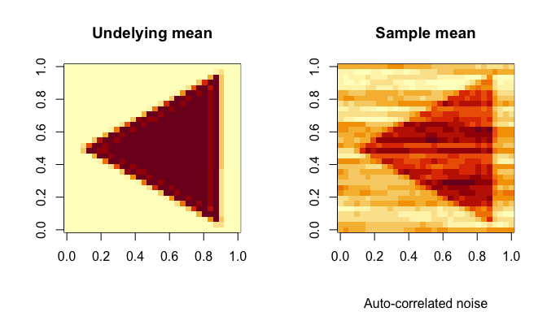
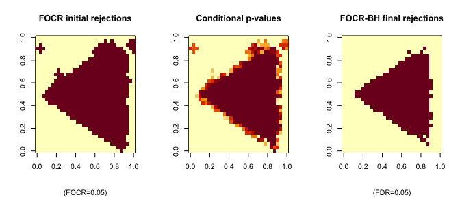

A two-stage procedure to solve the following multiple testing problems with topological constraints:
H0(s) : μ(s) = 0, H1(s) : μ(s) ≠ 0
In functional data analysis, the underlying function μ(s) may be subject to topological constraints (temporal, spatial, …). The functional domain is also uncountable. It is scientifically meaningful to extract blocks (clusters, or connected regions) of s such that H0(s) are rejected. The FOCR framework controls the type-I error in the following two stages:
- Stage-I: given blocks of hypotheses, control the FOCR (an extended false cluster rate) at given level. This step is to find connected regions of interests. The FOCR is defined as:
FOCR = 𝔼
$$*V*/*R*×*I*<sub>{*R* > 0}</sub>$$
,
where V = ∑kν(Dk)R(Bk)(1 − θ(Bk)) and R = ∑kν(Dk)R(Bk). Bk are the overlapped clusters (blocks) and Dk are the corresponding disjoint kernels; - Stage-II: given the previous rejection (clusters), calculate conditional p-values in a post-selection fashion. Then a further selection procedure will be applied to the conditional p-values to control the FDR (at individual level).
Please read vignettes, and help documents for more examples.
Installation
You can install the released version of focr from CRAN with:
install.packages("focr")And the development version from GitHub with:
# install.packages("remotes")
remotes::install_github("dipterix/focr")Example
Let’s sample from this 2D image (32x32 pixels). The underlying signal is a triangle. The noise is generated with correlation.

Example code:
The initial clusters, conditional p-values, and final rejections are displayed as follows:

For detailed usage, please read vignettes, and help documents.